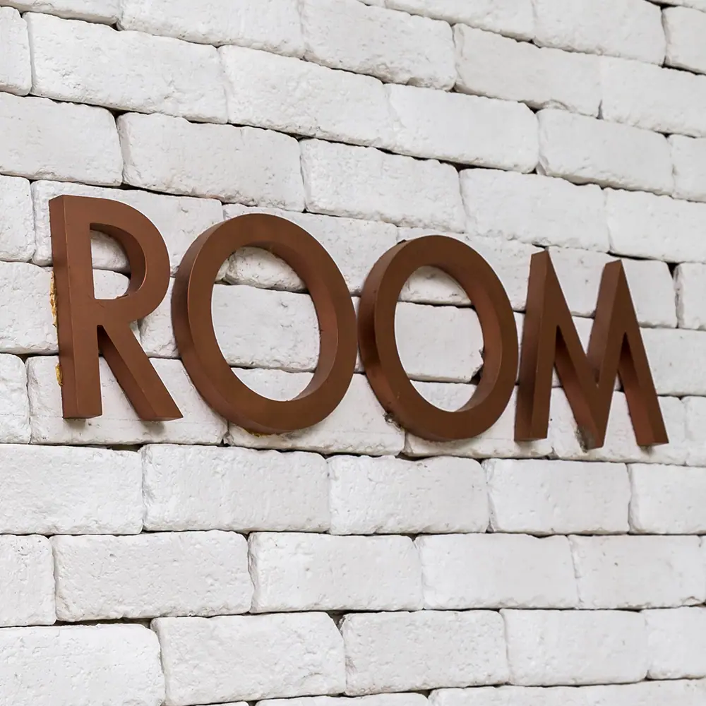

Ideal for home, work, bars, restaurants and any commercial, residential or public space, this metal wall art offers something special. Whether that’s a topic of conversation, a statement or just something beautiful to look at, there is a lot to recommend these pieces.
Full of texture and colour, our metal wall art can be laser cut to any size and shape. Our specialist team can take a design and precision cut your metal wall art to just about any size, shape or configuration.
Simply contact our team to discuss your needs !
You can use metal wall art indoors or outside. Just specify the intended use when ordering so we can finish the piece accordingly.
Choose a finish


Cut to size
Each of our bespoke finishes can be purchased in sheets cut to your size, perfect for your project.
- Pricing includes delivery and turnaround time is just 5-8 weeks
- Each piece is coated in a gloss finish lacquer that prevents the sheet from further aging

Ready to go
We can provide bespoke cut metal with each of our finishes being wrapped around wood and lacquer finished. Please get in touch for a bespoke quote .
Unique metal wall art
Our wall art is handmade and finished so every piece will be unique. We use specialist processes to deliver a lovely patina in one of a number of finishes.
Those finishes include:
- Somerset finish – Rich, complex brass tones with light and dark elements throughout
- Oxfordshire finish – Laid back finished with elements of colour reflecting the various depths of copper
- Cheshire finish – Rich aged copper patina with a depth of colour that has to be seen to be believed
- Wiltshire finish – Light, relaxed aged brass finish with a surprising depth of character
- Cambridgeshire finish – Rich, deep mill brass patina with a regular pattern within the metal
- Northumberland finish – Lovely mixture of aged copper with green verdigris colour
- Natural brass finish – The full brass experience laid bare
- Natural copper finish – Rich, warm tones only copper can deliver
- Hertfordshire finish – More complex aged copper patina with more blues and greens than Northumberland
HOW YOUR METAL WALL ART IS CREATED
All metal wall art begins life as a metal sheet. The sheet is then cut to the desired shape and size using a precision laser. We apply our specialist skills to artificially age the metal, if required, in the desired finish. We then complete the ageing process and seal the character with lacquer.
Once finished, the wall art is packed and shipped to your door!
Metal wall art looks lovely indoors or outside. We use a different lacquer depending on the intended use which is why we request you let us know when ordering.
FITTING YOUR METAL WALL ART
Depending on the shape, size and configuration, you can install your metal wall art using fixings or adhesive. If using adhesive, we recommend a liquid nail adhesive or epoxy resin.
CARING FOR YOUR METAL WALL ART
All the metal wall art we sell is protected by a strong lacquer but they can benefit from soft cleaning. Use soapy water and a soft cloth to remove dirt or debris from the metal.
Don’t use abrasives or chemical cleaners as they can break down the protective lacquer.
We provide full care instructions with every piece of metal wall art we sell so you’ll know exactly what to do.
Contact us today or request a personalised metal wall art quotation !


If you can dream it, we’ll make it.
Bars, balustrades, staircases, worktops, cladding and pieces that don’t have a name yet. Our designers and craftspeople work in brass, copper, zinc and steel, and alongside wood.